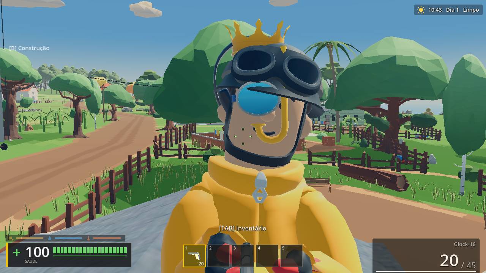
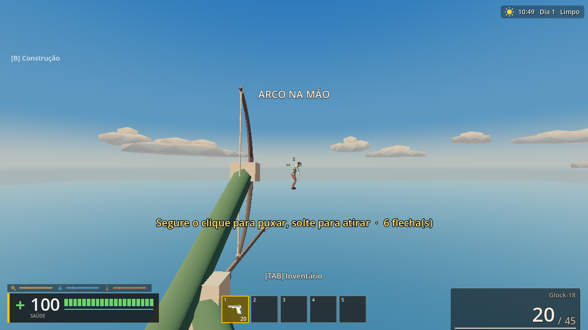
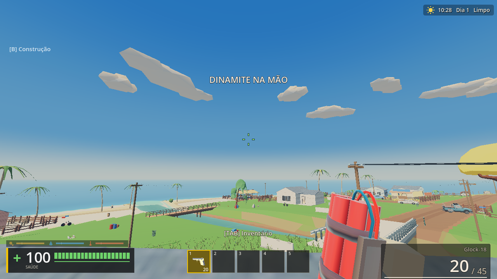
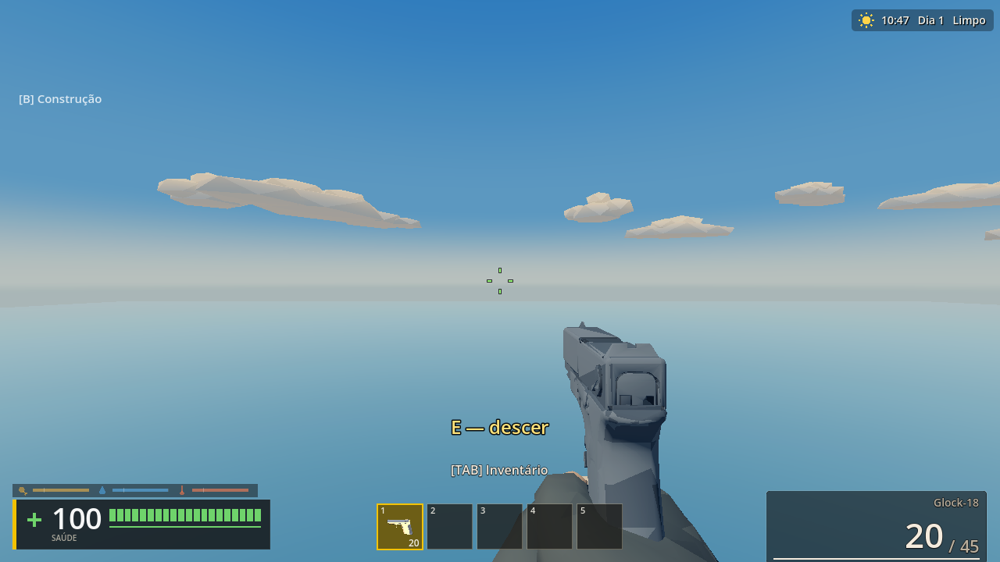
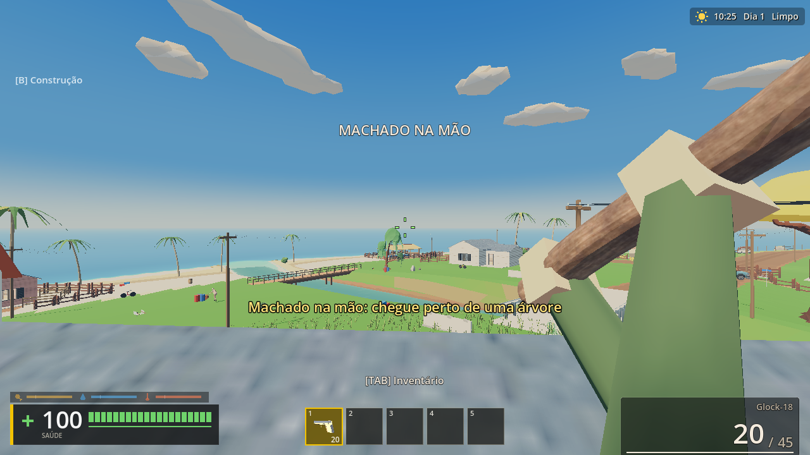
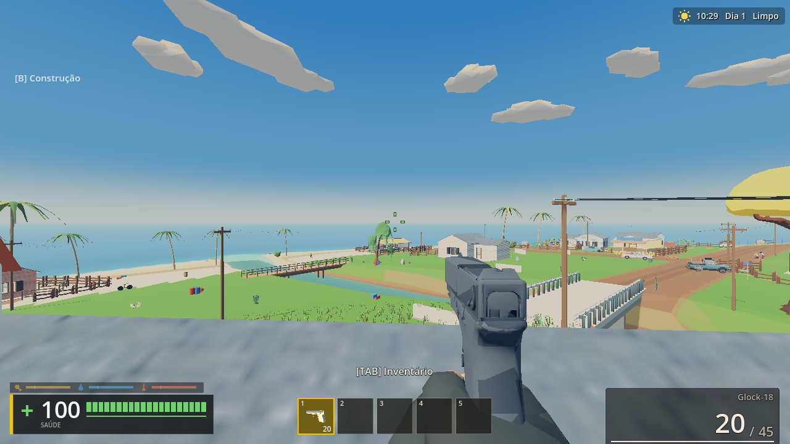
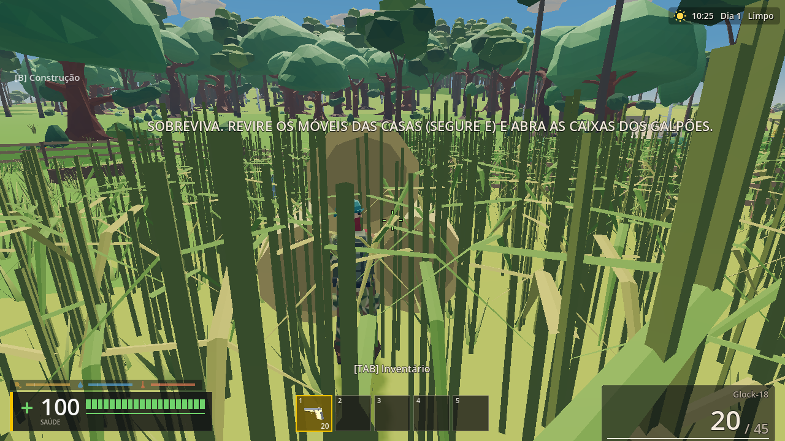
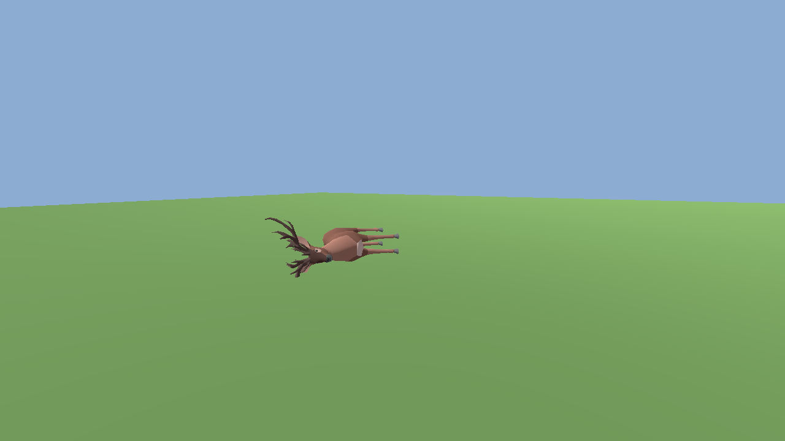
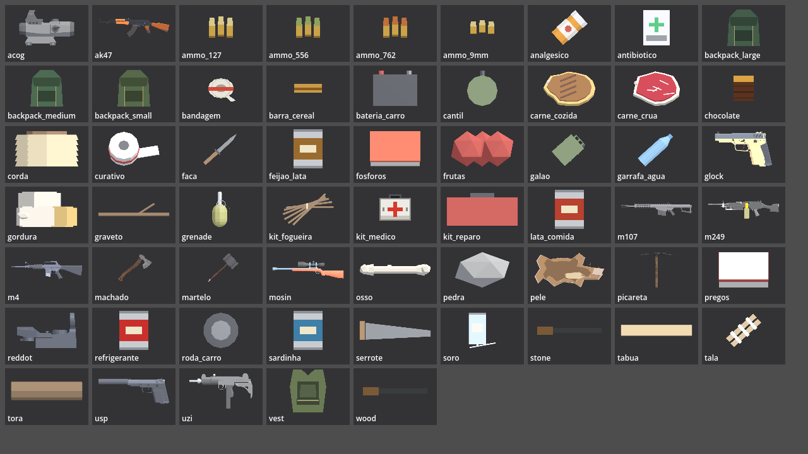

Build jogável
Partida completa com menu, cutscene, zumbis, carro, construção e barco de fuga rodando no Godot 4.7.1.
Sobrevivência de mundo aberto numa ilha litorânea tomada por zumbis. Pesca, machado, fogueira, arco, carro e um barco que pode levar você embora.
Levantamento de 2026-10-10 feito com a documentação pública da Steamworks. Confira os valores e tamanhos de arte no painel Steamworks antes de enviar: a Valve pode mudar isso.
Partida completa com menu, cutscene, zumbis, carro, construção e barco de fuga rodando no Godot 4.7.1.
Trailer de 2 minutos e capturas reais do jogo. A galeria desta página já tem material para a loja.
Mais de 200 cenas de teste no jogo real, mais testes visuais com capturas. Regressão principal passando.
Correções prontas no código (zumbis, animais, arco, ferramentas, câmera). O build 0.1.1 ainda não foi gerado. Veja a seção de hotfix.
Criar a conta de parceiro, preencher impostos, dados bancários e a verificação de identidade do titular.
Paga uma vez por app (ID novo) e reembolsada no pagamento seguinte quando o jogo passar de US$ 1.000 de receita.
Descrição, tags, idiomas (português e inglês), classificação etária IARC e requisitos mínimo e recomendado.
Cápsula principal, cabeçalho, capa de biblioteca e fundo. Confirme as medidas exatas na documentação de arte da Steamworks.
A Steam pede um mínimo de capturas: escolha as melhores da galeria e envie o trailer em alta.
O projeto ainda não tem SDK nem GodotSteam: faltam conquistas, nuvem e entrada pela Steam.
Enviar o build pelo steamcmd, com depot e branch default. Branch hotfix para correções rápidas.
Depois do envio, a loja passa por revisão antes de publicar. Não dá para cronometrar com certeza.
Testar instalação limpa em PC com GT 730 (meta 60 FPS em 1024×768) e confirmar a performance real.
Escolher preço, regiões de venda e se entra em promoção de lançamento.
Decidir se entra em acesso antecipado ou lança direto. Acesso antecipado costuma pedir um build mais polido.
Marcar a data (pode ser "em breve" até termos build e arte finais).









Um vírus de incubação curta, o COROV-27, infectou quase toda a humanidade em semanas. Quem perde a consciência vira um morto-vivo faminto. A contenção falhou em todos os continentes, e o rádio de emergência só repete: "stay indoors".
O herói é um pescador. Ele cai do barco numa tempestade e acorda de bruços numa praia da Ilha do Tauá, no dia um. O barco está encalhado, há fumaça sobre a vila e fios caídos. Ele não sabe o que aconteceu.
"They say the sea always gives back what it takes… I wish it hadn't."
A ilha tem vilas, quartel, helicópteros caídos, galpões e uma represa. A fauna se espalhou: cervos, galinhas, cães e, à noite, lobos. Os sobreviventes ainda estão lá, cada um com seu próprio motivo.
Tudo começou numa máquina de casa, com um pescador de mentira e um mapa feito à mão, ponto por ponto. A primeira versão tinha um zumbi, uma praia e um carro que não virava. A partir daí, cada mecânica entrou no jogo porque alguém perguntou "e se o personagem precisasse disso para sobreviver?". O machado veio antes do arco. A fogueira veio antes da fome. E o barco de fuga veio porque era preciso ter um motivo para sair da ilha.
Correções desde a versão 0.1.0, em ordem de impacto. Cada uma tem um teste no jogo real.
Para publicar: branch hotfix no SteamPipe, com build 0.1.1, e nota de atualização igual à lista acima. Itens em aberto ficam para a 0.2.